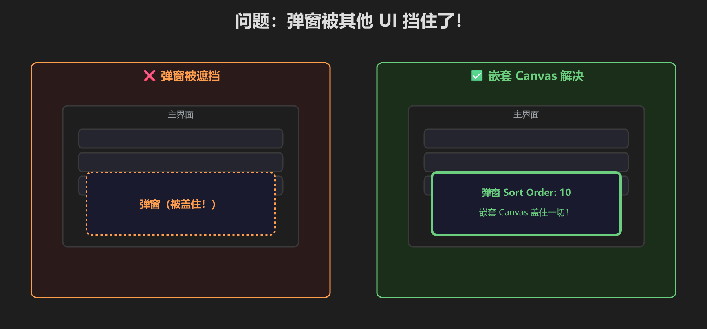
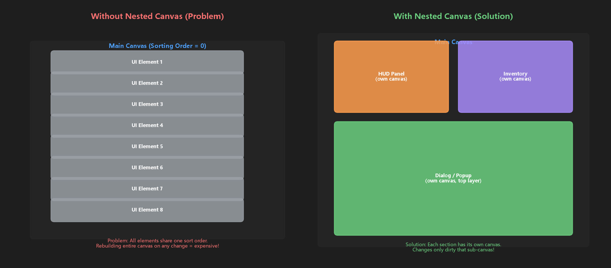
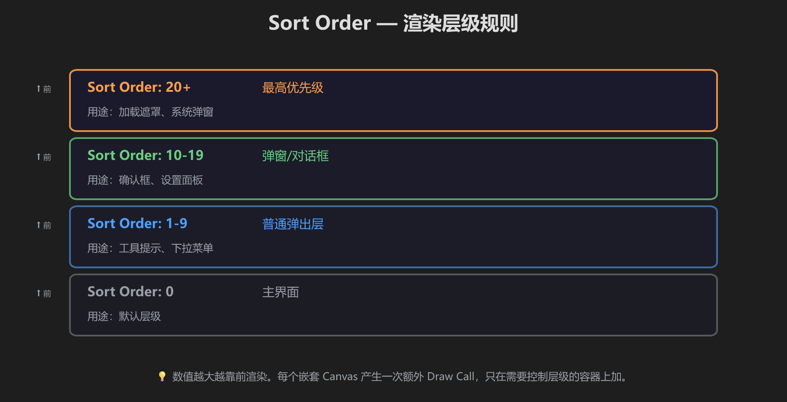
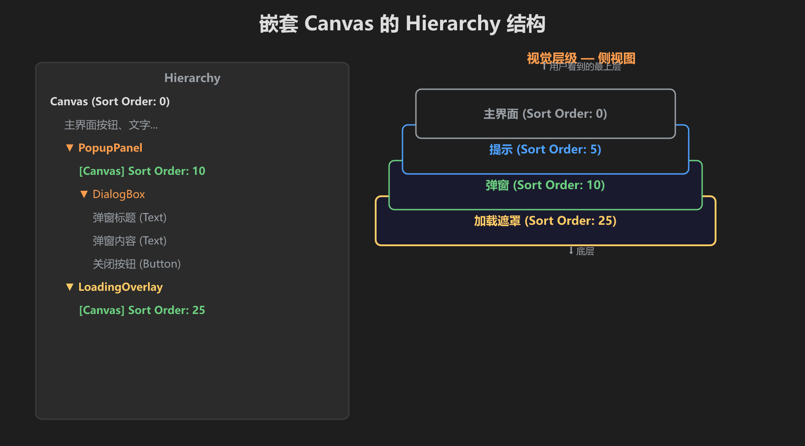
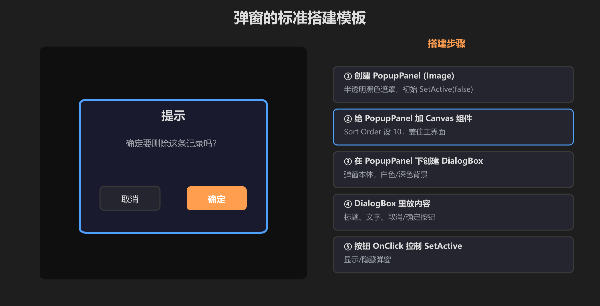
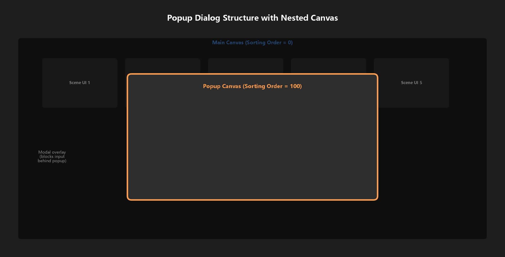
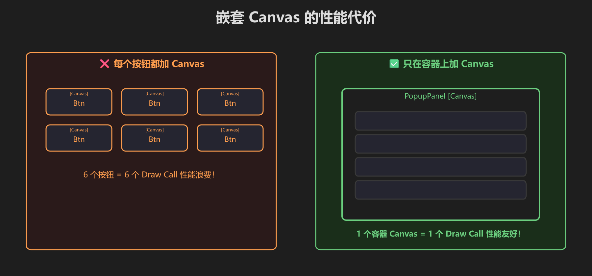

第 11 篇：嵌套 Canvas — 弹窗永远在最前面
弹窗被其他 UI 挡住了？嵌套 Canvas + Sort Order 解决。
⚠️ 问题：弹窗被遮挡

同一个 Canvas 下按 Hierarchy 顺序渲染 — 嵌套 Canvas 打破这个限制

嵌套 Canvas 不只是“盖在最上面”，还能减少 UI 重建范围
📊 Sort Order 层级规则

0=主界面 / 1-9=弹出层 / 10-19=弹窗 / 20+=最高优先级
🌳 嵌套 Canvas 结构

在 PopupPanel 上加 Canvas 组件，设 Sort Order=10
📋 弹窗标准模板

半透明遮罩 + 弹窗本体 + 按钮 — 5 步搭建

主 Canvas + Popup Canvas（Sort Order 更高）的结构总览
⚡ 性能警告

只在容器上加 Canvas，不要给每个按钮都加！每个嵌套 Canvas = 一次额外 Draw Call
- 创建 PopupPanel (Image)，初始 SetActive(false)
- 给 PopupPanel 加 Canvas 组件，Sort Order=10
- 在 PopupPanel 里做弹窗内容
- 按钮 OnClick 控制 SetActive 显示/隐藏
- [ ] 弹窗显示时盖住所有其他 UI
- [ ] 弹窗 Canvas Sort Order 高于主 Canvas
- [ ] 可以正常关闭弹窗